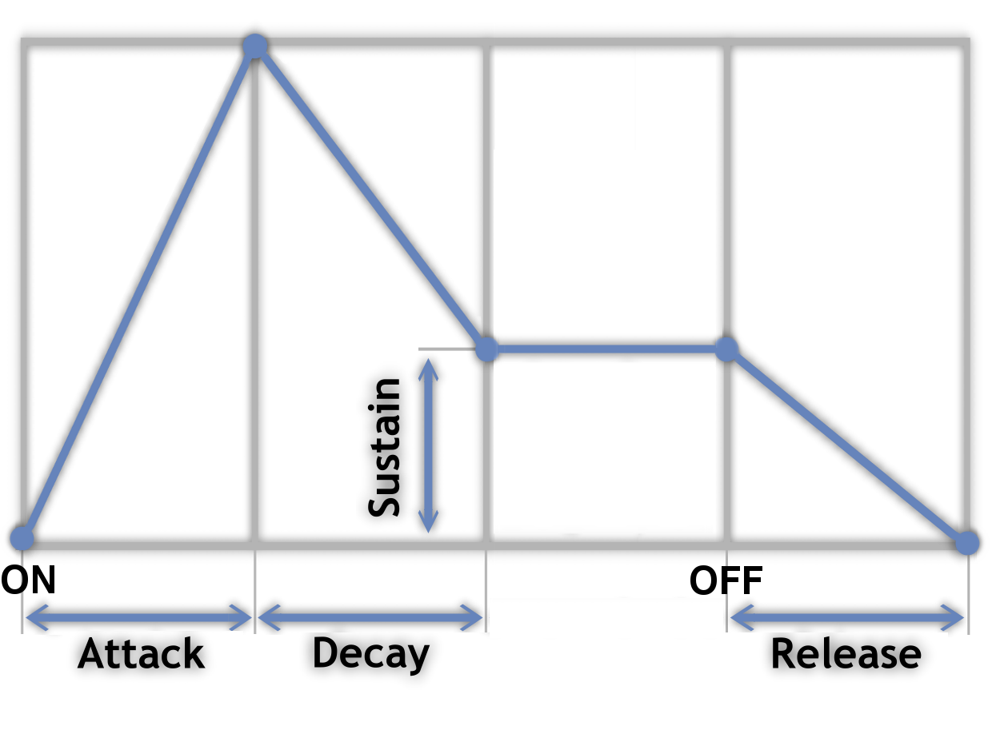

Learning LoopScript
Introduction
LoopScript is a text format which allows you to describe sounds, and then usem in interesting loop patterns to make beats or melodies. You can then combine those loops into longer tracks to create songs. Any sound or pattern you create can be individually played or exported as a sound file. Sounds are created using a simple declarative format. A 1.5 second C note might look like this in LoopScript:
This defines a new sound named "introsound". This sound can be referenced by name in other places in the LoopScript to be used as a source for loop patterns or other sound manipulation. When playing around on the website (such as the Playground) or if not specified on the commandline, LoopScript will always just generate the last thing declared. The commandline version lets you specify a sound by name to generate if you just want to test the output of a sound without having to listen to the entire thing every time. The rest of this page can be read/skimmed in order to see all of the features of LoopScript, or used as a reference via the table of contents above.
Format
LoopScript is pretty light on punctuation, and relies on line breaks an indents for most of its formatting. As in other formats/languages where indentation is significant, you can choose how much you want to indent each section provided that you are consistent (always use 2 space indents or a single tab indent, etc). Most sounds are a type (such as "tone") followed by your name for it, followed by some indented lines which define its settings. Names cannot contain spaces, but are otherwise pretty loose. Keeping the names simple and terse is best as you'll be referencing them later in your LoopScripts. Any setting you choose can be used outside of a sound declaration to change the default. For example, the bpm setting ("beats per minute") is only meaningful to a loop definition, but you can set it at top of your LoopScript to set the default bpm for any upcoming loops. You can also change it later in a global place and it'll only affect loops that haven't been declared yet. This works for any setting. Comments are made with the hash mark ("#"), and continue to the end of the line. An arrow pointing to the right ("->") can be used an alternative to an indent, and a semicolon and break up multiple settings on the same line. (experimental)
Tones
A tone is a description of a single waveform:
Tones have the following settings:
- wave - What type of waveform. sine is the default, and currently the only choice.
- duration - The length of the sound in milliseconds.
- note - Sets the frequency to a note (used with octave). A- are their respective notes, and H-L are the "black keys" of a piano (sharps/flats).
- octave - A value between 0 and 8 indicating the octave on a piano (0 is the bass end).
- freq - Directly set the frequency of the waveform. This overrides the note/octave pair.
- volume - A relative volume change. 1.0 is the default, which does not alter the volume.
- clip - true/false When used in a loop, this determines whether the sound will "clip" (overwrite) itself if played again before the previous duration finishes. If it is false, it will mix them together. Defaults to true.
- reverb - Sets the reverb (echo) on a waveform. Takes two values: a delay (integer) and a decay (floating point value). The delay is how long in milliseconds to repeat the sound, and decay is how much the volume decays for each echoed sound. (ex. reverb 250 0.5)
- adsr - Uses an ADSR envelope on the waveform. Takes 4 floats represent, ex. "adsr 0.005 0.05 0.7 0.05". See the ADSR section to understand what these values mean.
Here is an example of a more complicated tone:
Samples
Samples are external sound effects, read in from WAV files. Currently, LoopScript only supports 16 bit, 44.1KHz, mono WAV files.
Samples support the following settings:
- src - Location of the WAV file. Required. (no default value)
- volume - A relative volume change. 1.0 is the default, which does not alter the volume.
- clip - true/false When used in a loop, this determines whether the sound will "clip" (overwrite) itself if played again before the previous duration finishes. If it is false, it will mix them together. Defaults to true.
- reverb - Sets the reverb (echo) on a waveform. Takes two values: a delay (integer) and a decay (floating point value). The delay is how long in milliseconds to repeat the sound, and decay is how much the volume decays for each echoed sound. (ex. reverb 250 0.5)
- srcnote - The perceived note of the sample (A-L). This is useful for changing the pitch of a sample for a melody, such as a sample of a single guitar note.
- srcoctave - The perceived octave of the sample. (0-8)
- note - The requested note. If different than srcnote, the sample's pitch will be adjusted.
- octave - The requested octave. If different than srcoctave, the sample's pitch will be adjusted.
Loops
Loops are mixes of sounds in timed patterns. A loop requires at least one pattern which has the sound it will be repeating and a string of letters which represent the pattern itself. An example:
Pattern strings must always be a multiple of 16 characters, but has no limit to its length (within reason). Loops support the following settings:
- bpm - Beats Per Minute, aka tempo. 120 default.
- pattern - Explained above. Takes another sound's name and a pattern string.
Tracks
--Soon--
Sections
--Soon--
Advanced
--Soon--
ADSR
--Soon--
